Mixing and mastering for streaming
Everything you need to finish a track that holds its own next to commercial releases: how loudness is measured, what streaming services do to your music, how to get a fuller mix, and how to master and deliver it. Each chapter shows what to look for in MasterScope and what to do about it in Liminal.
How streaming plays your music
Spotify, Apple Music, YouTube, Tidal and the other big services measure the loudness of every track and turn it up or down so that everything plays at about the same level. This is called loudness normalisation. Spotify, for example, adjusts tracks to −14 LUFS by default.
That changes the old rules. A master pushed to −8 LUFS doesn't play louder on Spotify than one at −14: it is turned down 6 dB, and all that is left of the extra loudness is the limiting that was used to get there. What decides how big a track sounds next to others is no longer how loud the file is, but how full and clear it is at the same loudness.
| Service | Default level | Notes |
|---|---|---|
| Spotify | −14 LUFS | Premium listeners can choose Loud (−11) or Quiet (−19). Quiet tracks are only turned up as far as their peaks allow, keeping 1 dB of headroom. |
| Apple Music | about −16 LUFS | Applied when Sound Check is on. |
| YouTube | about −14 LUFS | Turns loud tracks down, but doesn't turn quiet ones up. |
| Tidal, Amazon Music | about −14 LUFS | |
| Deezer | about −15 LUFS | |
| SoundCloud, Bandcamp, DJ software, downloads | none | Files play at the level you made them. |
Services publish and change their policies from time to time, and listeners can switch normalisation off. Spotify's figures are from its loudness normalisation guide; the others are widely reported defaults.
- On streaming, extra loudness is taken away again. Density (how full the track sounds) is what you keep.
- A track that can't reach −14 without its peaks going over −1 dBTP plays quieter than everything around it on Spotify.
- Where nothing normalises (SoundCloud, DJ sets), a louder file does play louder. You can master for both: see Density and PLR.
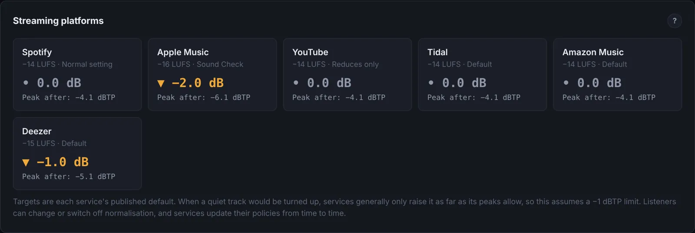
Measuring loudness: LUFS
LUFS (loudness units relative to full scale) measures loudness the way we hear it, following the ITU-R BS.1770 standard. Before measuring, the signal is filtered to match the ear: very low bass counts for less, and the upper mids and highs count for a little more. That is why a mix heavy in sub bass can read surprisingly quiet, and why a little more presence reads louder.
- Integrated loudness
- The loudness of the whole track: the number streaming services normalise to. Silence and very quiet passages are left out (anything below −70 LUFS, then anything more than 10 LU below the average), so adding silence or a quiet intro doesn't change it.
- Short-term loudness
- Loudness over a sliding 3-second window. It shows how loud each section is. The loudest short-term reading is how hard your chorus or drop hits.
- Momentary loudness
- The same over 0.4 seconds. It moves with individual hits and words.
- Loudness range (LRA)
- How much the short-term loudness varies across the song, in LU, ignoring the quietest 10% and loudest 5%. Roughly, under 5 LU is very consistent and 6 to 10 is typical of songs with breakdowns.
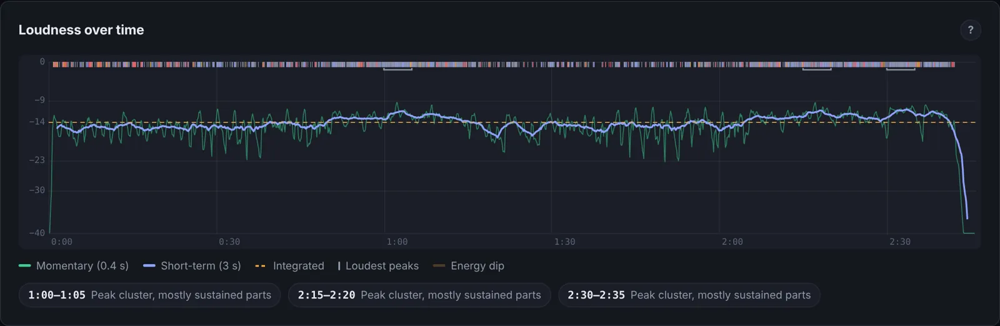
Peaks: sample, true and codec
Loudness is about the body of the sound; peaks are its highest points. Three readings matter, each stricter than the last.
- Sample peak (dBFS)
- The highest sample value in the file. 0 dBFS is the top of the scale.
- True peak (dBTP)
- The highest point of the reconstructed waveform, including peaks that fall between samples. These "inter-sample peaks" can be well over the sample peak on dense, bright masters. Measured by oversampling.
- Codec peak (estimate)
- The true peak after lossy encoding (AAC, Ogg, MP3). Encoders remove the very top of the spectrum, and that reshapes the waveform so its peaks rise, often by 1 to 2 dB on loud, bright or clipped masters. MasterScope and Liminal estimate it by filtering at 16 kHz and measuring the true peak.
The usual ceiling is −1 dBTP. Spotify recommends keeping true peak below −2 dBTP when your master is louder than −14 LUFS, because louder masters overshoot more when encoded. The codec estimate tells you directly: if it reads above −1 dBTP, the encoded version may distort wherever it plays at full level.
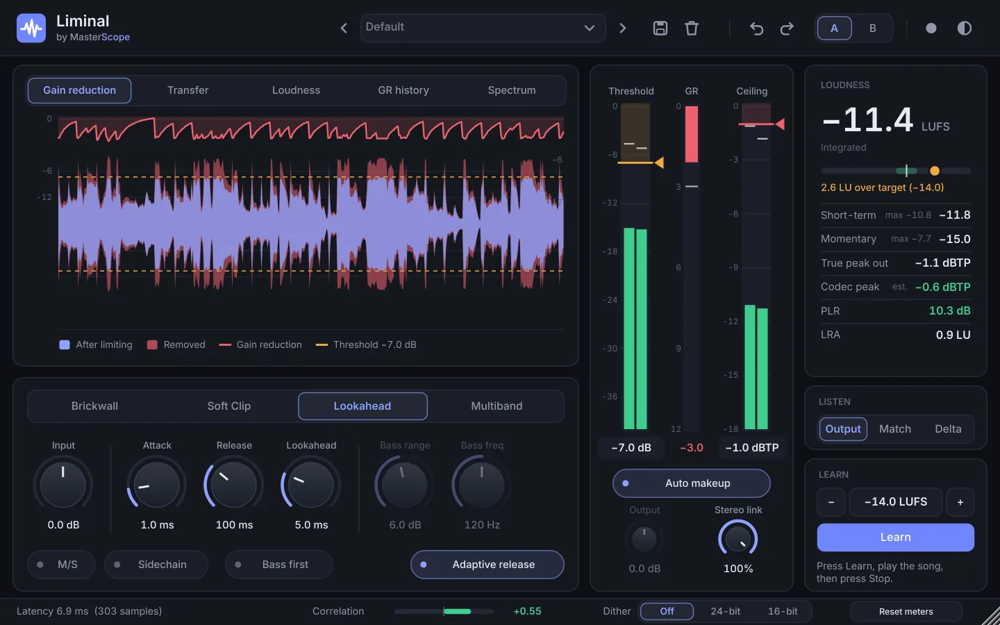
Density and PLR
The peak-to-loudness ratio (PLR) is true peak minus integrated loudness. It measures how far the peaks stand above the body of the track, so it is the clearest single number for density.
| PLR | Sound | Typical of |
|---|---|---|
| under 8 dB | Squashed: drums lose their snap, the track can sound smaller | Very loud club and EDM masters |
| 8 to 12 dB | Full and even, with punch intact | Most pop, hip-hop, dance and rock releases |
| 12 to 13 dB | Open and punchy, less dense | Acoustic, jazz, older-style masters |
| over 13 dB | Can't reach −14 LUFS with peaks at −1 dBTP | Unmastered mixes |
Because PLR is peak minus loudness, choosing a PLR and a ceiling fixes the loudness: target loudness = ceiling − PLR. A PLR of 10 with a ceiling of −2 dBTP lands at −12 LUFS. A PLR of 13 with a ceiling of −1 lands at −14.
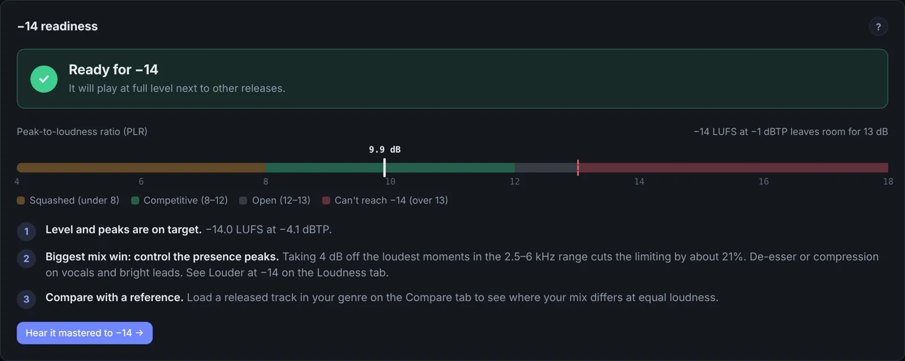
Does denser sound louder?
A little, and only up to a point. LUFS already measures loudness the way we hear it, so at −14 two tracks are about equally loud. A denser master sounds fuller and more constant, which reads as "bigger" at low volume. Below a PLR of about 8, the drum hits lose impact and the track starts to sound smaller, even though the meter says it is just as loud. Judge density by ear at matched loudness, and compare against a reference in your genre.
Louder masters by choice
You don't have to master to exactly −14. A master at −12 with a PLR of 10 is turned down 2 dB on Spotify and sounds the same there as a −14 master with the same density, but it plays louder on SoundCloud and in DJ sets. So pick your PLR by ear, set the ceiling (−1 dBTP, or lower for louder masters and anything clipped), and let the loudness follow. Don't turn the master down after the limiter just to read −14: streaming services will do that for you, and the file will be quieter everywhere else.
Tonal balance
Tonal balance is how the energy is spread from sub to air. MasterScope compares each octave with pink noise, which has equal energy per octave and sounds balanced to the ear, so a flat line means balanced and the bars show where your mix leans.
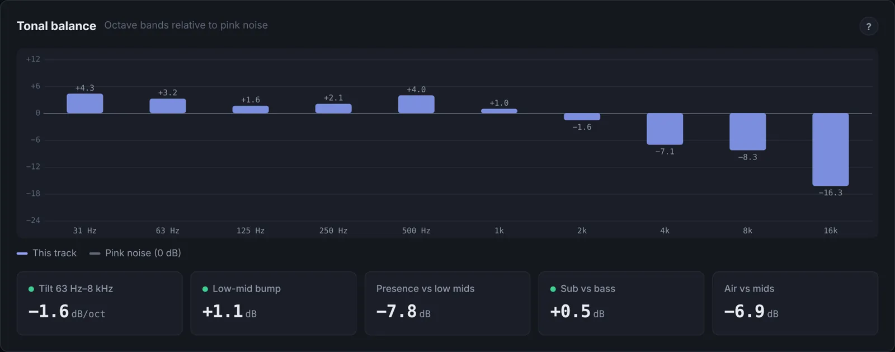
- Tilt
- The overall slope from 63 Hz to 8 kHz. Steeper than about −3 dB per octave sounds dark and woolly; above 0 sounds bright and thin.
- Low-mid build-up (250 to 500 Hz)
- Where mud and boxiness live. Many parts overlap here; small cuts on the busiest ones clear space.
- Presence (2 to 5 kHz)
- Where the ear is most sensitive. A mix with too little presence sounds smaller at the same loudness. Most releases sit around 3 to 6 dB below the low mids here.
- Sub (20 to 60 Hz)
- Felt more than heard. Phones and small speakers can't play it, but it still takes up peak room.
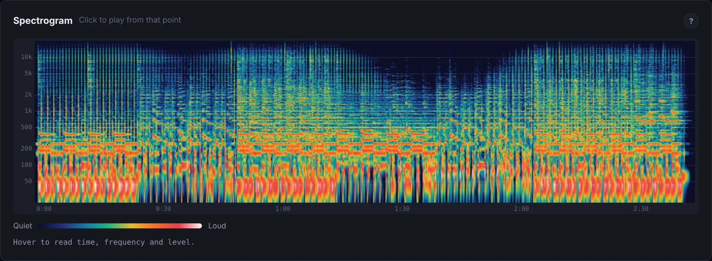
The low end
The kick and bass carry most of a track's energy, so they decide a lot about how clean and loud it can be.
- Give the kick its own moment. If the bass or 808 is still sounding when the kick hits, the two add up into bigger peaks and the low end blurs. Shorter bass notes or sidechain ducking from the kick fixes it.
- Keep the low end in the centre. Below about 150 Hz, stereo content loses weight on mono systems (phones, many club rigs) and sounds loose. Make it mono, or narrow the parts that sit there.
- Measure before you cut. Sub bass counts for little in LUFS but can take up peak room, so cutting it can help. It doesn't always: if your loudest peaks come from somewhere else, cutting the low end only makes the track thinner. MasterScope's Louder at −14 panel shows which is true for your track.
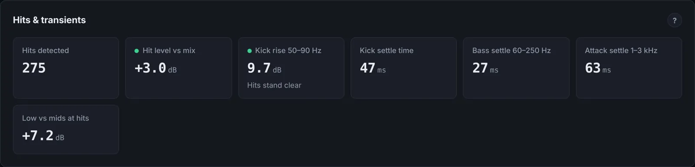
Stereo and mono
A wide mix sounds big on headphones, but much of the world listens in mono or near-mono: phone speakers, Bluetooth speakers, clubs. Anything that cancels in mono disappears there.
- Phase correlation
- +1 means the channels are identical (mono), 0 means unrelated, below 0 means parts cancel when summed. Most mixes sit between about +0.5 and +0.9.
- Stereo width
- The share of energy in the side (left minus right) signal. Bass should be close to 0%; pads, reverbs and doubles can be wide.
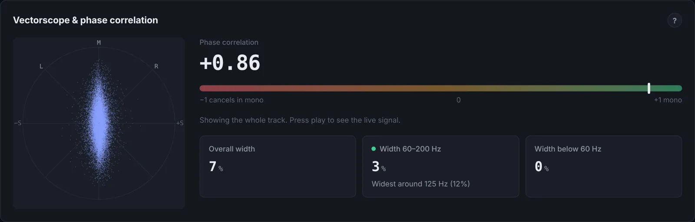
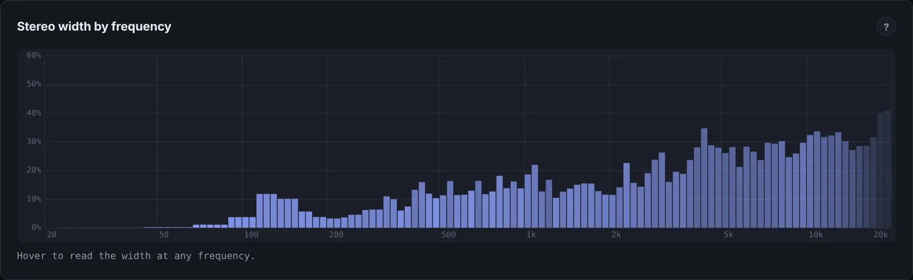
Dynamics in the mix
A master can only be as dense as the mix allows cleanly. If a few parts poke out far above the rest, the master limiter has to pull the whole track down every time they hit, and that is what you hear as pumping and lost punch. Controlling those parts in the mix lets the limiter do less for the same loudness.
The tools
- Compressor
- Turns a part down when it goes over a threshold, by a ratio. Attack sets how quickly it reacts (slower lets the transient through), release how quickly it lets go. Use it to even out vocals, bass and buses.
- Clipper
- Shaves off the very tops of waveforms instantly. On a drum bus, a dB or two of clipping takes the sharpest transients off with little audible change. It adds bright harmonics, so watch the codec peak on the master.
- De-esser
- A compressor that only reacts to harsh "s" and "t" sounds, or any bright, spiky part: hats, a bright synth.
- Saturation
- Gentle distortion that adds harmonics and density to sustained parts without the pumping of heavy compression.
Find what the limiter is fighting
MasterScope's Louder at −14 panel splits your track into six ranges and shows two things for each: its share of the height of the loudest peaks, and its share of the loudness. A range with a long amber bar and a short blue one spends peak room without adding much loudness. It then tests the fix on your actual audio: taking 4 dB off the loudest moments in one range at a time and measuring how much less limiting the track then needs.
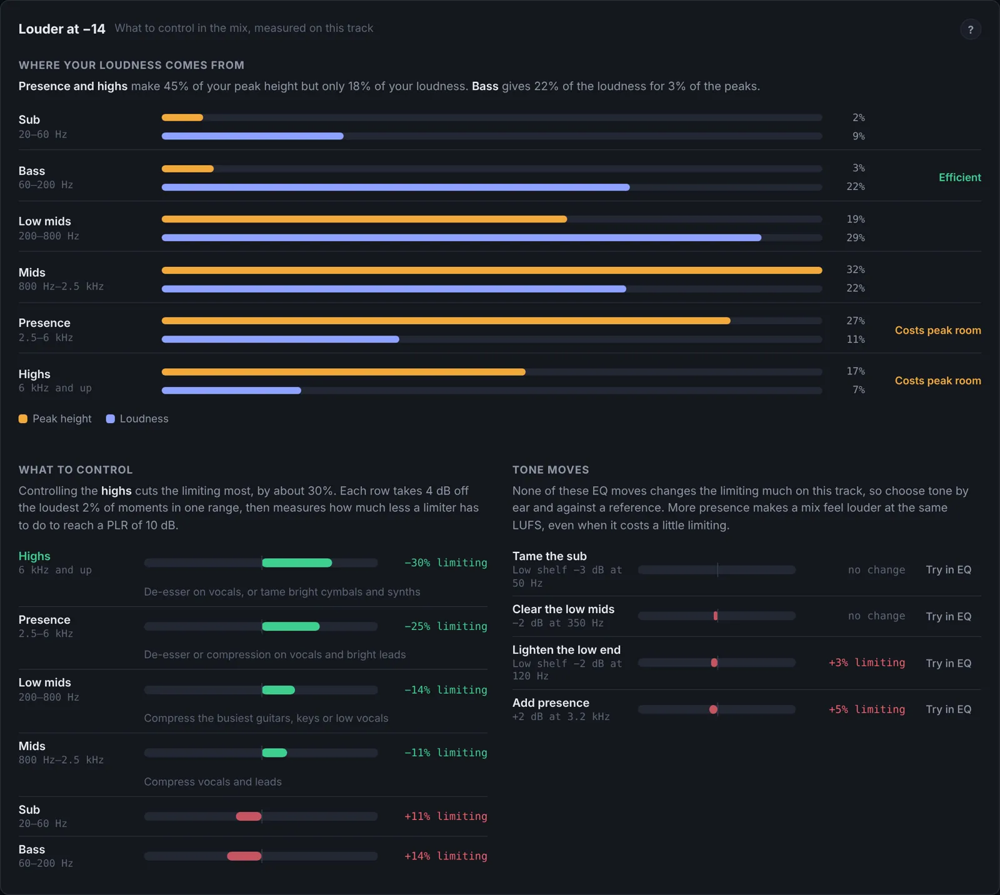
It also tells you whether those peaks are drum hits or sustained parts, and suggests the matching tool: a drum-bus clipper for hits, a de-esser or compression for a bright vocal or synth. For the clearest answer, analyse your mix with the master limiter switched off.
How a limiter works
A mastering limiter does two jobs: it stops peaks going over a ceiling, and it lets you raise the overall level until the track is as dense as you want. Every limiter has the same core controls.
- Threshold and makeup
- Lowering the threshold makes the limiter work harder and, with makeup gain, raises the level. Liminal's Learn sets the threshold for you to land on a loudness target.
- Ceiling
- The highest level the output can reach, in dBTP. −1 is the usual choice; −2 or lower for louder masters, and lower still if the codec peak reads high.
- Attack and lookahead
- Lookahead lets the limiter see a peak coming and turn down smoothly before it arrives, instead of clipping it. Attack is how gradually it does so. Very short attack (under 1 ms) grabs the front of every drum hit and flattens the punch; around 5 to 10 ms keeps it.
- Release
- How quickly the gain recovers after a peak. Short release is denser but can distort or pump; long release is smoother but can duck the track after each hit. Adaptive release stretches it automatically on dense passages.
- Stereo link
- How much the two channels share gain reduction. 100% keeps the stereo image steady; lower lets each side be limited on its own.
- Oversampling
- Runs the limiter at a higher internal rate so it catches inter-sample peaks and reduces distortion, at the cost of CPU.
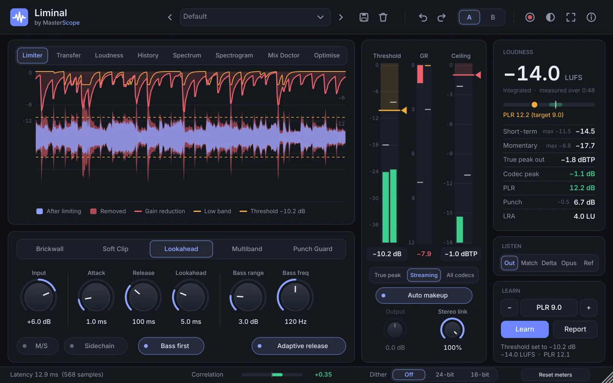
Liminal's modes
- Lookahead
- The default for mastering: smooth, transparent gain reduction with adjustable attack, release and lookahead.
- Brickwall
- Zero added latency and an absolute ceiling. Useful while tracking or for a final safety stage.
- Soft Clip
- Rounds the peaks off instead of turning the track down. It keeps the gain reduction low and the dynamics lively, but the clipped edges raise the codec peak, so it suits masters with headroom under the ceiling.
- Multiband
- Limits the lows and highs separately, so a big kick doesn't pull the vocal down with it.
- Bass first
- Takes up to a set amount off the low band before the main limiter, so the kick and bass don't trigger limiting across the whole mix. Use only as much as you need: on most mixes 2 to 3 dB is plenty.
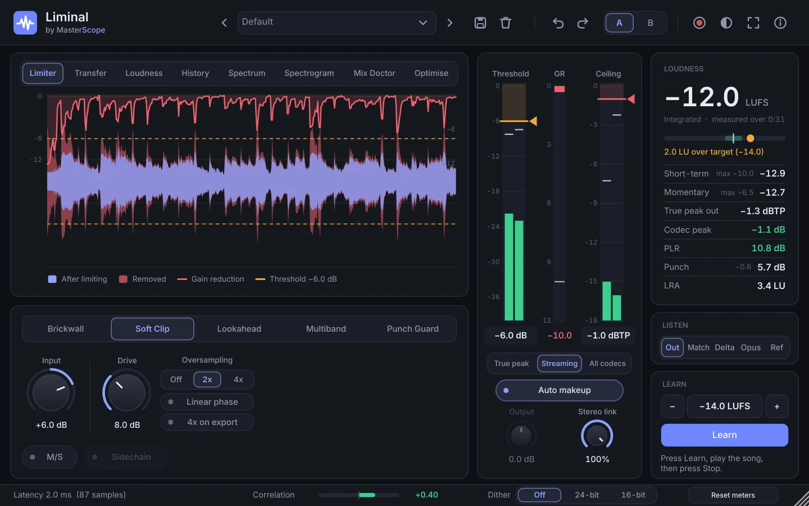
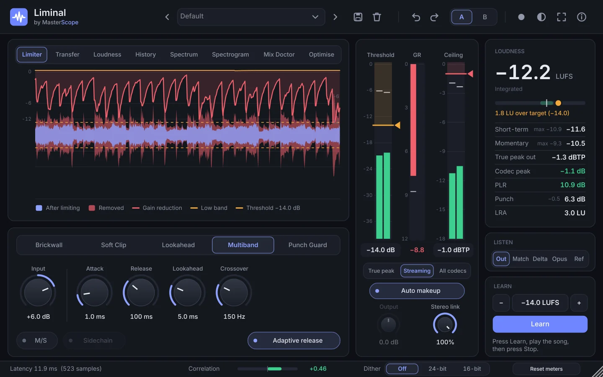
A mastering workflow
This is the loop that works with MasterScope and Liminal. It starts in the mix, because that is where the biggest gains are.
- Analyse the mix. Bounce it with no limiter on the master and open it in MasterScope. Fix anything in "What to work on" first: mud, harshness, wide bass, energy dips, and whatever the Louder at −14 panel says the limiter would be fighting.
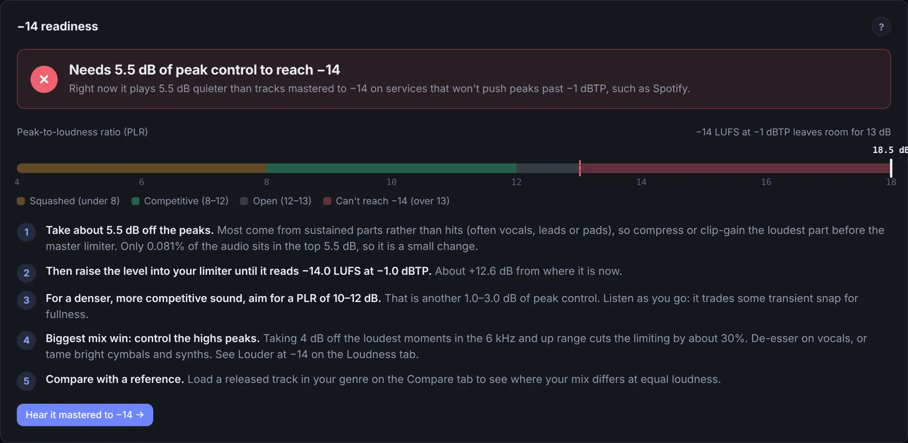
An unmastered mix: PLR 18.5 dB, so it needs about 5.5 dB of peak control to reach −14. The steps say what to control first. - Put Liminal last on the master. Lookahead mode, attack around 10 ms, release around 30 ms with adaptive release on, stereo link 100%. Add Bass first only if the low end is triggering the limiter.
- Set the ceiling. −1 dBTP for a −14 master; −2 or lower for anything louder.
- Choose your density and set the target. Target = ceiling − PLR. For a full, competitive sound, aim for a PLR of 9 to 11.
- Press Learn and play the song once. Liminal listens, then renders what it heard at different thresholds and sets the one that lands on your target.
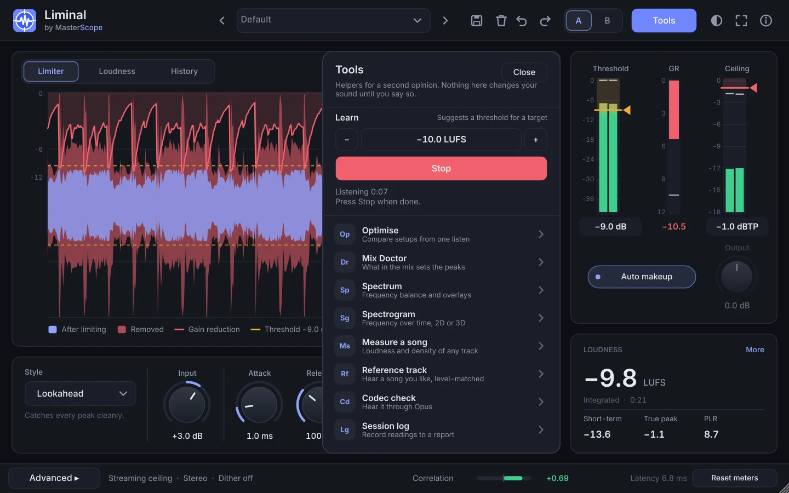
Learn listening. 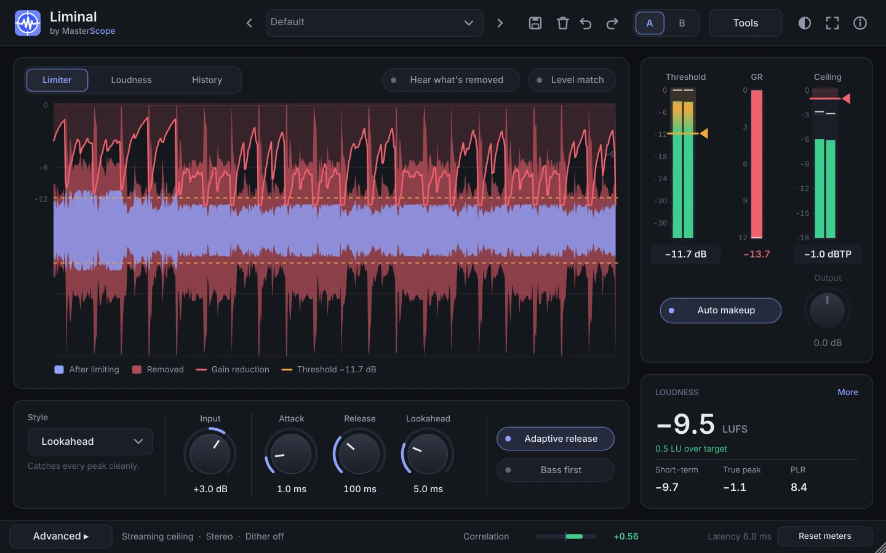
Done: the threshold is set and the Report button appears. - Save the report. Press Report and save the .json, then drop it on MasterScope to see the result, the gain reduction over time and your settings. No second play-through needed. (Record does the same for a live play-through after you change settings by hand.)
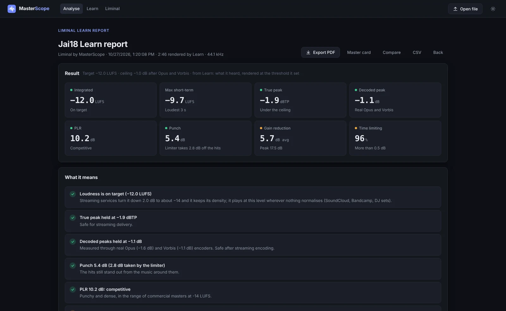
A Learn report in MasterScope: loudness, peaks, codec estimate, PLR and gain reduction, plus a timeline and the settings used. - Listen with Match and Delta. If the drums lose their snap, ease the target by 1 dB, lengthen the attack, or go back and control the peaks in the mix.
- Export and check the final file. Open the bounced master in MasterScope: true peak, codec peak, density and tone. Then load a reference on the Compare tab.
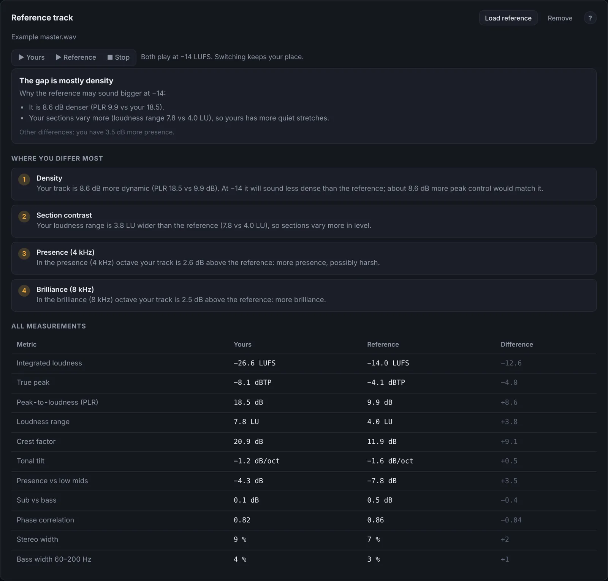
Compare explains why a reference may sound bigger at −14, then lists every difference.
Exporting and delivery
- Format. WAV or AIFF at the sample rate you mixed at. 24-bit is best; 16-bit is fine for most distributors.
- Dither once, at the end. When reducing to 16-bit, add dither (Liminal's Dither switch) on the final export only. Never dither twice.
- No changes after the limiter. Don't normalise on export, and don't turn the master down afterwards unless you mean to. Every change after the limiter changes the peaks it worked to control.
- Check the encoded peaks. Keep the codec estimate at or below −1 dBTP. If it is higher, lower the ceiling and Learn again at the same PLR, or tame the brightest peaks in the mix.
- One master or two? One master at your chosen density works everywhere. If you want a very loud club version, make it a separate file and check its codec peak too.
- Leave a little silence at the start and end so nothing is cut off, and let reverb tails finish naturally.
Release checklist
- Integrated loudness where you chose it (−14, or louder by choice)
- True peak at or below −1 dBTP (−2 for louder masters)
- Codec peak estimate at or below −1 dBTP
- PLR in the range you want, chosen by ear at matched loudness
- No clipped samples, no DC offset
- Tonal balance close to a good reference in your genre
- Bass centred; phase correlation positive; nothing disappears in mono
- Drums still punch after limiting (listen with Match and Delta)
- Sections sit where you intend: no unintended energy dips
- Correct format, sample rate and bit depth, dithered once
- Listened on headphones, a phone speaker and a car or club system
MasterScope's PDF report collects all of these in one place, so it is also a good document to keep with each release.
Glossary
- dBFS
- Decibels relative to full scale, the top of the digital range (0 dBFS).
- dBTP
- Decibels true peak: the waveform's real peak including inter-sample peaks.
- LUFS / LU
- Loudness units relative to full scale, and the difference between two loudness readings (1 LU = 1 dB).
- PLR
- Peak-to-loudness ratio: true peak minus integrated loudness.
- Crest factor
- Peak minus RMS level; a rougher cousin of PLR.
- Gain reduction (GR)
- How much a compressor or limiter is turning the signal down, in dB.
- Headroom
- The space between the highest peak and the ceiling or 0 dBFS.
- Inter-sample peak
- A peak between two samples, higher than either, that appears when the signal is converted back to analogue or resampled.
- K-weighting
- The filter LUFS uses to match the ear before measuring loudness.
- Lookahead
- A short delay that lets a limiter react before a peak arrives.
- Mid/side
- Splitting stereo into what is shared (mid) and what differs (side) between the channels.
- Normalisation
- A service turning tracks up or down to a common loudness.
- Pink noise
- Noise with equal energy per octave; sounds balanced, and is the reference for tonal balance.
- Sidechain
- Using one signal (often the kick) to control a processor on another (often the bass).